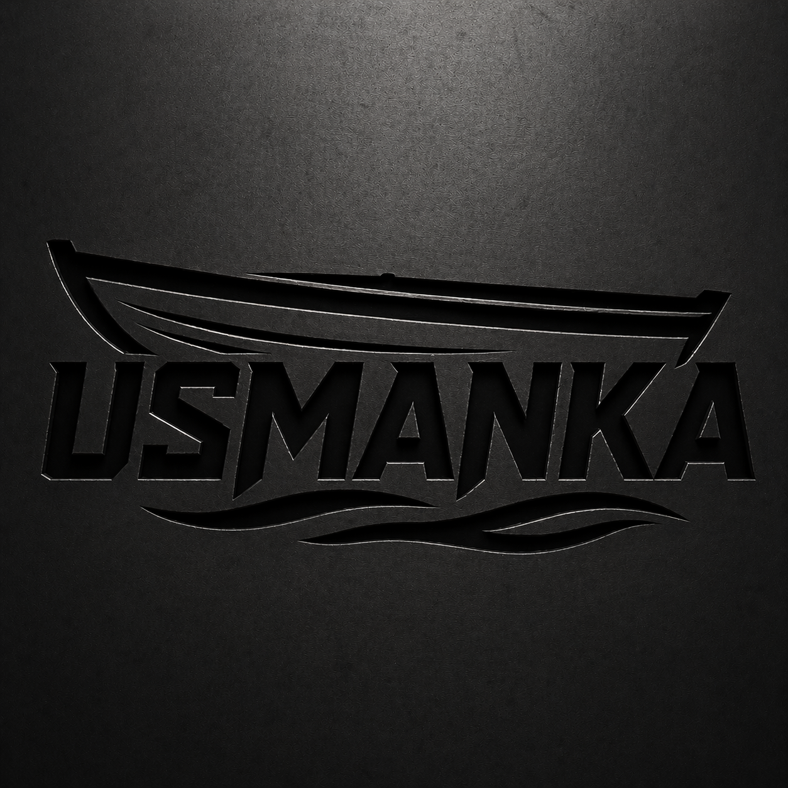
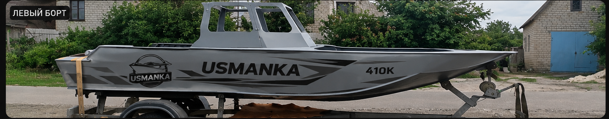

USMANKA
Главная
Галерея
+7 (961) 028-81-91
Роман · Ваш персональный менеджер
MAX
СИЛА В ДЕТАЛЯХ
Создана для
большой воды.
USMANKA 410K · уверенный характер и продуманная конструкция

СМОТРЕТЬ ЛОДКУ
↗
01 / 01
USMANKA 410K